السؤال 4

الجواب الصحيح: 2
في هذا كاين الشاحنة هذا معمرة المسلك ديالي و بالإضافة للسيارة لي جاية قبالتي .
هي عربة دات الأولوية.
و بالتالي واجب عليا نشد ليمن و نعطيها حق الأسبقية.
25 سؤال
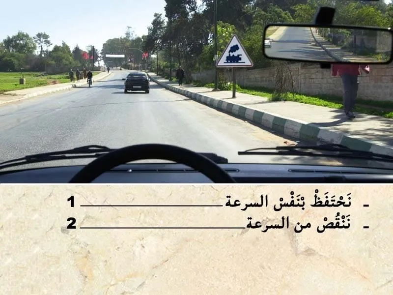
الجواب الصحيح: 2
هذا العلامة ديال الخطر.
- كتنبه على خطر ممر على السكة الحديدية بدون حواجز.
في هذا الحالة واجب عليا ننقص من السرعة و نتأكد ان الممر خاوي عاد ندوز.
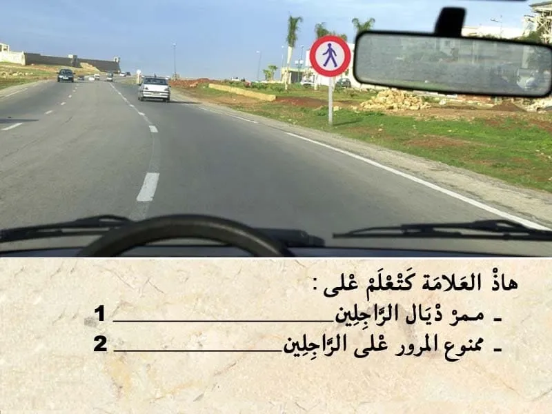
الجواب الصحيح: 2
هذا العلامة ديال المنع.
كتعلم بلي المرور ممنوع على الراجلين.
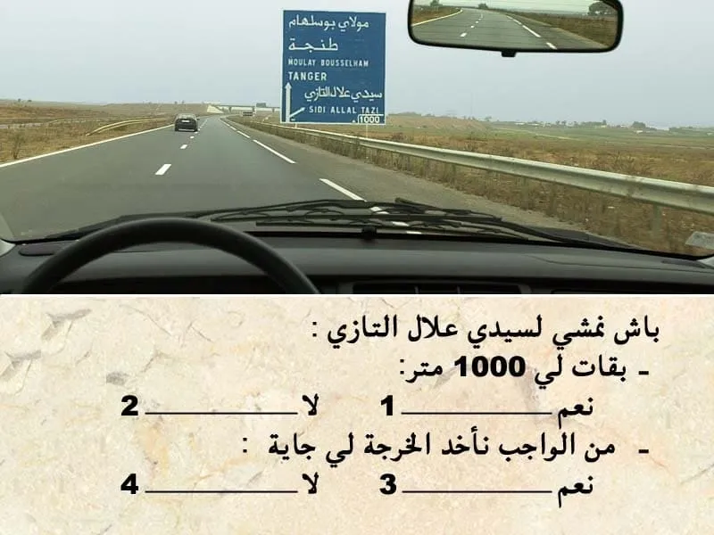
الجواب الصحيح: 2 و 3
التشوير الطرقي كيضم علامة ديال الإرشاد.
هذا العلامة كتعلم منفذ من الطريق السيار على بعد 1000 متر.
- المنفذ لي مزال ليه 1000 متر و ليس التجمع السكني "سيدي علال البحراوي"
- باش نمشي لسيدي علال البحراوي واجب عليا ناخد الخرجة الجاية.
الجواب الصحيح: 2
في هذا كاين الشاحنة هذا معمرة المسلك ديالي و بالإضافة للسيارة لي جاية قبالتي .
هي عربة دات الأولوية.
و بالتالي واجب عليا نشد ليمن و نعطيها حق الأسبقية.

الجواب الصحيح: 2 و 4
التشوير الطرقي.
كيضم رصيف احمر و أبيض .
يعني ممنوع التوقف قبل العلامة . و بعد العلامة ايضا كاين رصيف احمر و أبيض .
بالإضافة الرصيف لي كيمنع التوقف .كاين هذا العلامة لي كتمنع التوقف بعد العلامة .
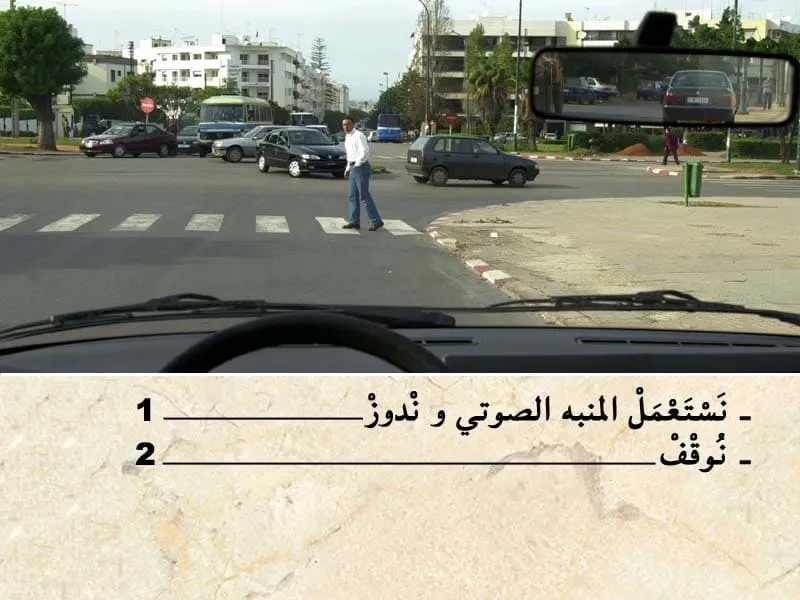
الجواب الصحيح: 2
في هذا الحالة كاين هذا الراجل في ممر ديال الراجلين. و بالتالي واجب عليا نوقف و نعطي حق الأسبقية.

الجواب الصحيح: 2
في هذا الحالة انا خارج من الكراج و بالتالي واجب عليا نعطي حق الأسبقية لهذا الراجلين.
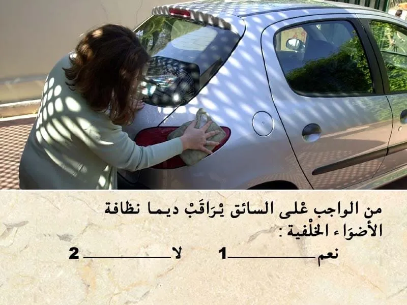
الجواب الصحيح: 1
من الواجب مراقبة أضواء السيارة. و نضافتها.
و من الواجب تكون معيا مصابيح إحتياطية.
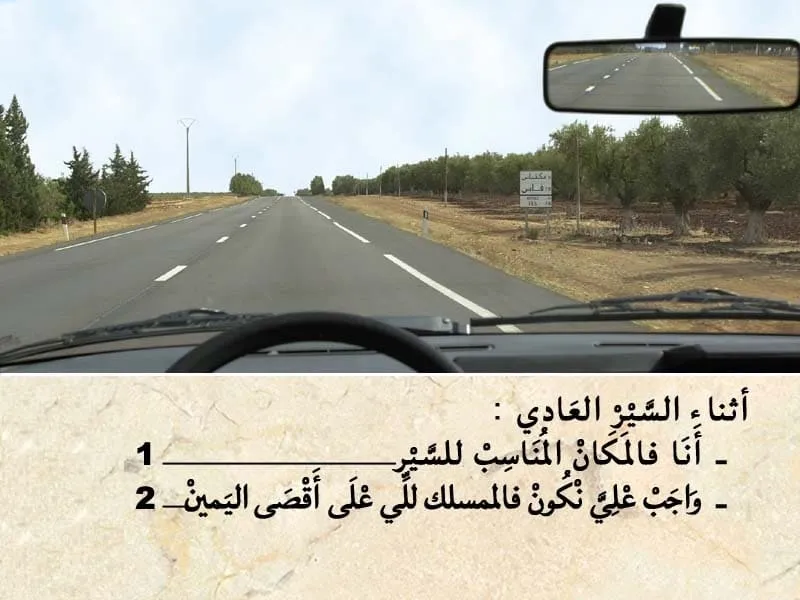
الجواب الصحيح: 1
المسلك لي أقصى اليمين هو مسلك خاص : في غالب الاحيان كيكون مسلك للعربات المجرورة بواسطة حيوانات او مسلك للدراجات .
اما المسلك ديال السير العادي هو لي انا غادي فيه الان.
و بالتالي انا في المكان المناسب للسير .
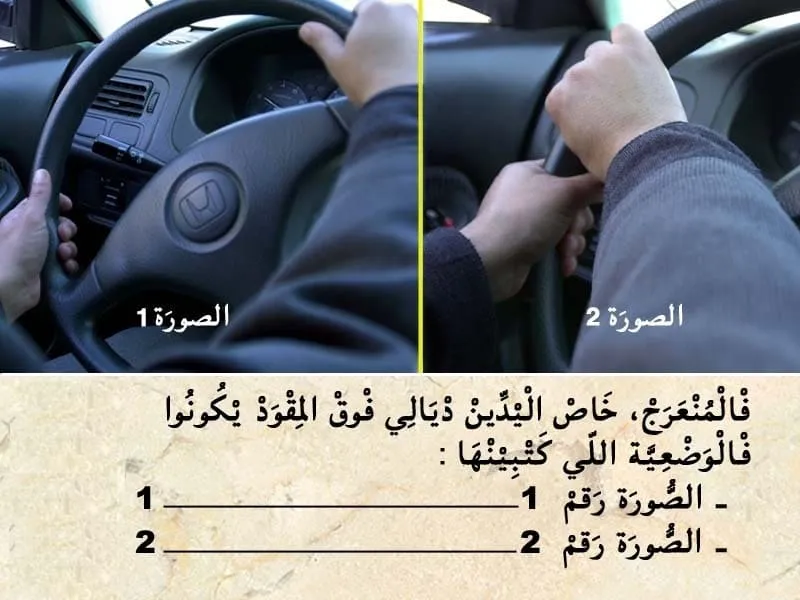
الجواب الصحيح: 1
في المنعرج الوضعية المناسبة ديال اليدين ديالي خاص تكون فوق المقود كما هو مبين في الصورة رقم 1.
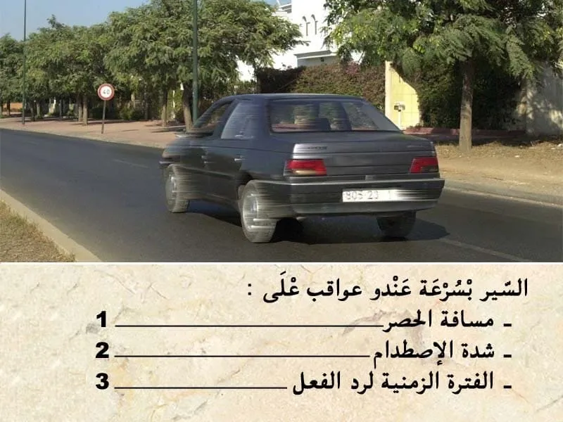
الجواب الصحيح: 1 و 2
السير بسرعة كيأثر على مسافة الحصر يعني كلما تزادت السرعة غادي تزاد مسافة الحصر.
و حتى على شدة الاصطدام . مثال:
- الا ترعضتي للاصطدام بسرعة ديال 60 كلم في الساعة غادي تخلف اضرار اقل من الاكنت غادي بسرعة 120 كلم في الساعة .
أما الفترة الزمنية لرج الفعل ما كتأترش .
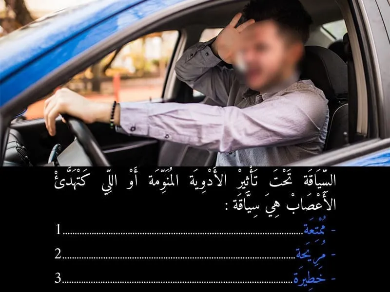
الجواب الصحيح: 3
في حالة ما السائق اخد الأدوية المنومة او اللي كتهدئ الاعصاب كيسبح معرض لخطر النوم اثناء السياقة . او خطر فقدان التركيز على الطريق.

الجواب الصحيح: 2
السياقة مركبة من الواجب على السائق يتوفر على رخصة السياقة سارية الصلاحية.
في حالة ما السائق ما كانش كيتوفر على رخصة السياقة كيتعرض لغرامة و كتعتبر جنحة.
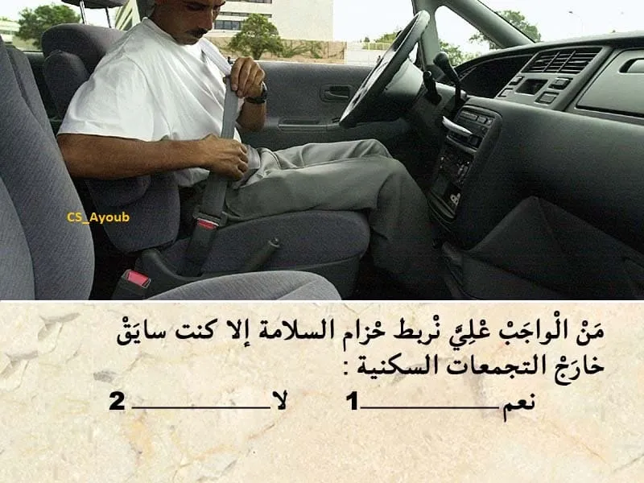
الجواب الصحيح: 1
عدم ربط حزام السلامة.
كتعتبر مخالفة من الدرجة الثانية.
كتعرض السائق لغرامة مالية 💸 ديال 500 درهم.
و يسحب نقطة واحدة من رصيد رخصة السياقة.
- بالنسبة للركاب الأمامين من الواجب ربط حزام السلامة داخل و خارج التجمع السكني .
بالنسبة للركاب الخلفيين من الواجب ربط حزام السلامة خارج التجمع السكني فقط .
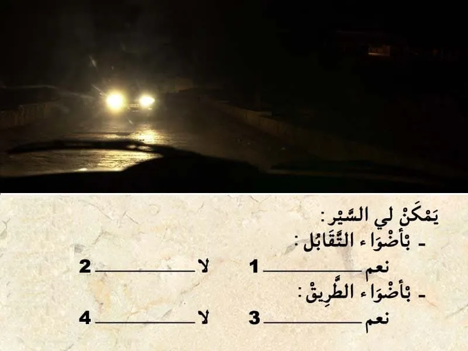
الجواب الصحيح: 1 و 4
في حال التقابل مع مستعمل طريق آخر.
واجب عليا نشغل اضواء التقابل .
و ممنوع عليا نستعمل اضواء الطريق.
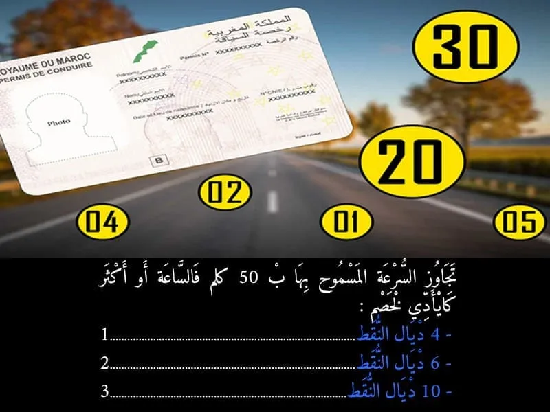
الجواب الصحيح: 2
تجاوز السرعة القصوى المسموح بها بما يعادل أو يفوق 50 كلم في الساعة. كتعتبر جنحة.
- كتعرض السائق لسحب 6 نقط من رخصة السياقة.
يعاقب بغرامة من أربعة آلاف (4.000) إلى ثمانية آلاف (8.000) درهم توقيف رخصة السياقة لمدة تتراوح ما بين شهر واحد وثلاثة أشهر في حالة العود إلى ارتكاب المخالفة، يعاقب المخالف بالحبس من شهر إلى ثلاثة أشهر وبغرامة من عشرة آلاف (10.000) إلى خمسة عشر الف (15.000) درهم أو بإحدى هاتين العقوبتين فقط. علاوة على ذلك، يضاعف الحد الأقصى لمدة توقيف رخصة السياقة.
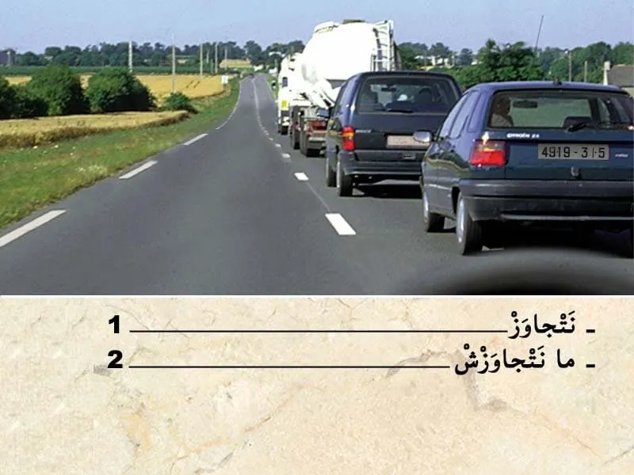
الجواب الصحيح: 2
قبل التجاوز . واجب عليا نراقب، تم نبه، تم ننحاز.
في هذا الحالة الطريق خاوية . طريق فيها السير في الإتجاهين.
⛔ و لكن قدامي بزززاف ديال المركبات و بالتالي ما يمكنش لي نتجاوز الآن.
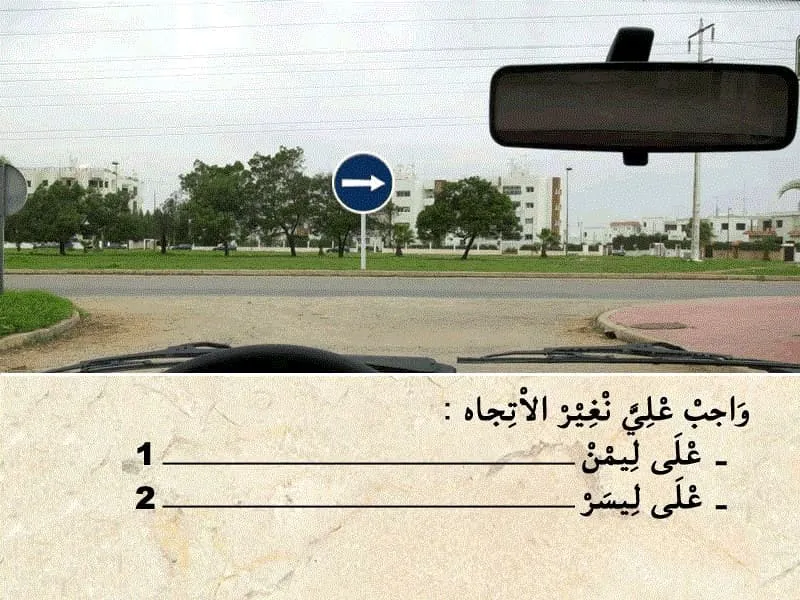
الجواب الصحيح: 1
هذا العلامة ديال الاجبار.
- كتعلم بلي واجب عليا نغير الإتجاه ليمن في هذا ملتقى الطرق.
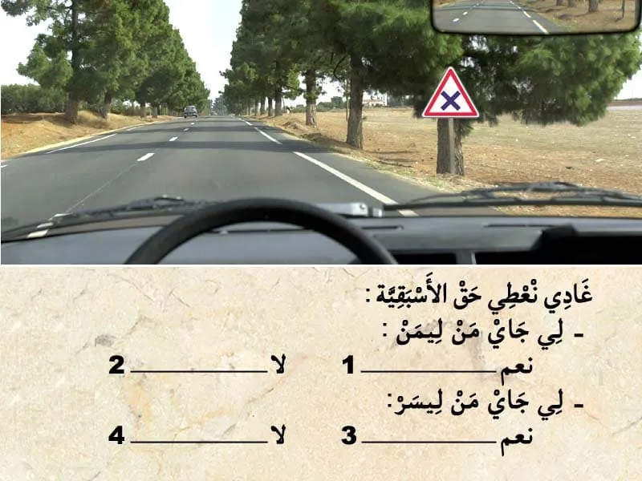
الجواب الصحيح: 1 و 4
هذا العلامة ديال الخطر.
- كتعلم على انني غادي نلقى ملتقى طرق على بعد 150 متر .
- في هذا ملتقى الطرق واجب عليا نعطي حق الأسبقية للي جاي من جهت ليمن.

الجواب الصحيح: 2 و 3
في هذا الحالة الطريق قدامي مغمورة بالماء و في الجنب ديال الطريق كاين الراجلين و بالتالي من الواجب ننقص من السرعة . و ننحاز ليسر باش ما نأديش الراجلين بالماء .
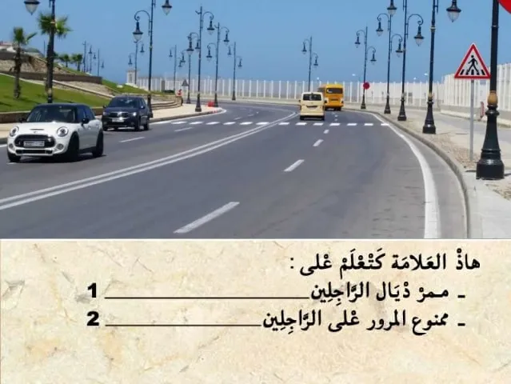
الجواب الصحيح: 1
هذا العلامة ديال الخطر .
- كتعلم على وجود ممر ديال الراجلين.
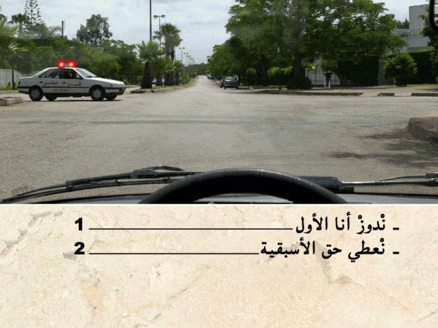
الجواب الصحيح: 2
هذا العربة هي من العربات دات الأسبقية .
و مشعلة الضوء ديال الاستعجال و بالتالي واجب عليا نعطيها حق الأسبقية.

الجواب الصحيح: 2
هذا العربة دات الأولوية .مشغلة ضوء الاستعجال .
الطريق ديالها عامرة و بالتالي واجب عليا نعطيها حق الأسبقية.

الجواب الصحيح: 2
الاقراص و صفائح الحصر من الواجب المراقبة ديالهم و تغيرهم في حالة تعرضوا التأكل .
الصفائح كيتم التآكل ديالهم بسرعة.
على عكس الاقراص كيصبروا مدة أطول .
و بالتالي كنغيروا غير لي ما بقاش صالح فيهم
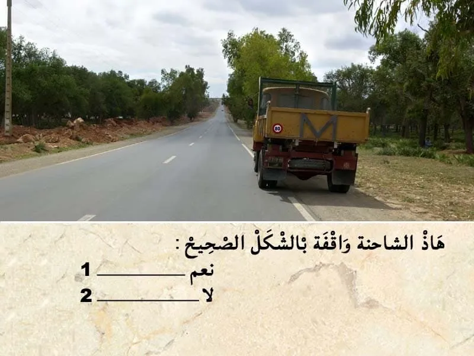
الجواب الصحيح: 2
هذا الشاحنة جزء منها داخل مسلك السير. و بالتالي التوقف بشكل غير صحيح.